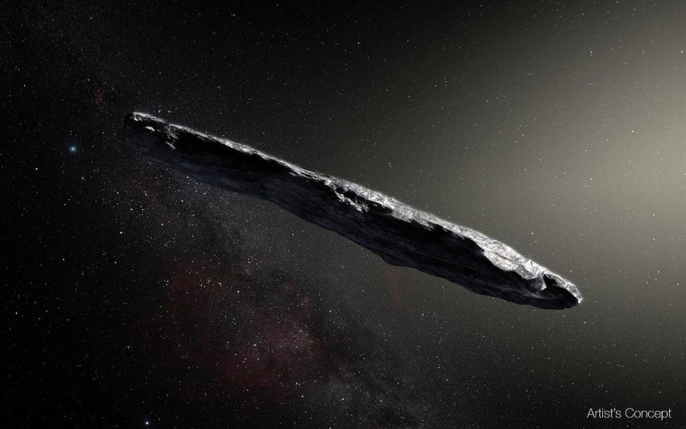

Los asteroides son cuerpos rocosos y metálicos que orbitan alrededor del Sol, principalmente entre Marte y Júpiter, en el llamado cinturón de asteroides.

Datos
El mayor asteroide es Ceres (también considerado planeta enano).
Algunos asteroides tienen lunas propias.
Los asteroides pueden impactar la Tierra.
Curiosidades
Se han descubierto más de 1 millón de asteroides.
Algunos asteroides contienen agua y metales preciosos.